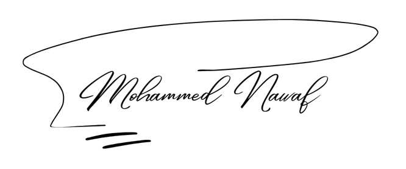

Mohammed Nawaf


Driven to Explore. Ready to Deliver.
Technology is a hobby and a passion for discovery. I enjoy exploring new technologies and tools, understanding how they work, experimenting, and turning ideas into projects and practical solutions. My interests span IT, systems and networking, web development, databases, automation, and cybersecurity, including governance, risk and compliance (GRC) and security operations (SOC). Curiosity drives me to keep learning, connect different disciplines, and expand my skills around the idea or problem I am working on.
See This in My ProjectsProfessional Profile
IT and cybersecurity professional with a background in Information Systems. I combine systems support, governance, risk and compliance (GRC), and knowledge of security operations (SOC). I learn new technologies to meet work requirements and use them to turn problems into practical solutions.
My Projects & Deliverables
Task Management & Governance Web System
Oct 2025 – Feb 2026What I delivered
Designed and developed a Laravel web system for task management and governance, with role-based access control.
Deliverables
Access permissions across five roles, KPI dashboards, and automated reports in PDF and Excel formats.
The value
Brings task tracking, permissions, and reporting into one system and reduces manual report preparation.
Cybersecurity GRC Excel Toolkit
17 Jul – 17 Oct 2026The file contains 31 worksheets in total: 25 core worksheets comprising 20 GRC registers and management sheets and 5 dashboard and analytics sheets, plus 6 supporting sheets for the cover, navigation, documentation, and quality assurance.
What I delivered
Developed a customizable Excel file to organize cybersecurity governance, risk, and compliance activities.
Deliverables
Registers for controls, assessments, and evidence; inherent and residual risk scoring and treatment plans; and tracking for audit findings, actions, and exceptions. Includes third-party, privacy, incident, and business continuity records, with dashboards, dropdown lists, conditional formatting, and navigation links.
The value
Brings GRC records into one file to simplify review of entered data and follow-up on risks and actions. References NCA, SAMA, PDPL, ISO/IEC 27001, NIST CSF, and CIS Controls.
Agri Zone – Full-Stack Agricultural E-Commerce Platform
Apr 2024 – May 2025What I delivered
Developed the backend and designed the relational database for an agricultural e-commerce platform.
Deliverables
PHP application logic and a database schema, alongside leading sprint planning, task coordination, and iterative feature delivery.
The value
Connects customers directly with sellers through an agricultural e-commerce platform, without intermediaries.
Work Achievements
- Reviewed and audited 100+ security reports and documents to support information accuracy and documentation quality related to the NCA Essential Cybersecurity Controls (ECC).
- Brought task tracking and access management into one web system supporting 5 roles, with KPI dashboards.
- Automated reporting in PDF and Excel formats to reduce manual report preparation.
- Contributed to NCA requirements and initiatives supporting the transition to an independent General Directorate.
A unified system for tracking tasks, permissions, and reports, alongside reviewed security documentation supporting NCA ECC compliance activities.
- Supported 20+ employees by resolving hardware and software issues and helping them resume work after technical disruptions.
- Monitored enterprise networks and addressed technical issues to support service continuity and limit disruption to daily work.
Resolved user and network technical issues, helping employees resume work and continue using IT services.
Information Technology
User and system support, troubleshooting, networking, and IT infrastructure.
IT co-op experienceGovernance, Risk & Compliance
Organizing controls and evidence, assessing risks, and tracking compliance and corrective actions.
11 months of volunteer experience + development of a GRC management toolkitSecurity Operations
Knowledge of monitoring, SIEM, threat detection, vulnerability assessment, and incident response.
Knowledge supported by certifications and security toolsSkills & Supporting Work
Education
Bachelor's Degree in Information Systems
College of Computer Science
Credentials & Knowledge
Cybersecurity Specialization
King Khalid University
IBM Cybersecurity Professional Certificate
IBM
77-Hour Intensive Program covering:
Additional Courses
Fundamentals of Web • Data Fundamentals • Project Management Foundations
Languages
Explore My Supporting Documents
All Files & Attachments
Explore project files, certificates, and supporting attachments in one folder.
Open My Work Files